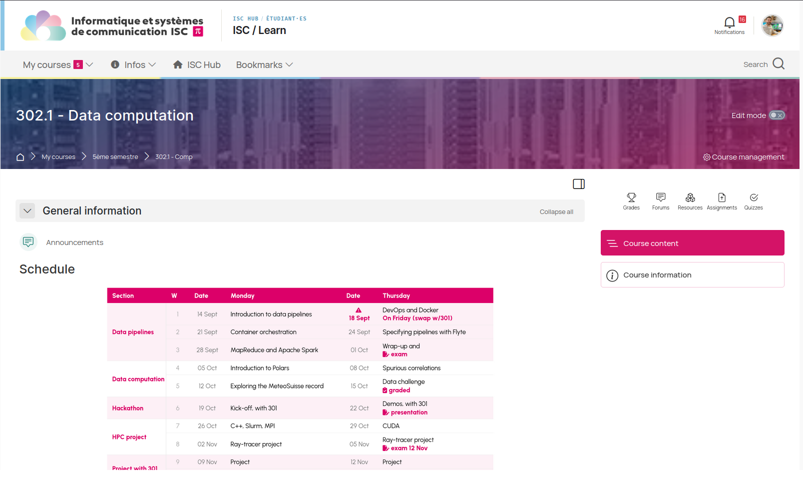

name: title layout: true class: cover --- count: false .section-mark.center[ <a href="https://oesteban.github.io/isc-302-2026-2027-slides/week1/day0/index.html"> <object type="image/svg+xml" data="images/qr-talk-url.svg" style="width: 20%"></object> <br /> https://oesteban.github.io/isc-302-2026-2027-slides/week1/day0/index.html </a> <br /> <br /> ## Data computing—module overview Oscar Esteban <<code>oscar.esteban@hevs.ch</code>> <br /> ### 302 Data infrastructures (week 1, day 0) — 14.09.2026 ] ??? --- name: newsection layout: true include_org: true .perma-sidebar[ <p class="rotate"> <a rel="license" href="http://creativecommons.org/licenses/by/4.0/"><img alt="Creative Commons License" style="border-width:0; height: 20px; padding-top: 6px;" src="https://i.creativecommons.org/l/by/4.0/88x31.png" /></a> <span style="padding-left: 10px; font-weight: 600;">Data computing—module overview (14.09.2026)</span> </p> ] --- # Course overview .cards.cols-4.vcenter[ .card[ .kicker[.small[Weeks 1-3 · Esteban]] ### Data pipelines .section-icon.centered[] DAGs, containers, orchestration, distributed processing. ] .card[ .kicker[.small[Weeks 4-5 · Mermoud]] ### Data computation .section-icon.centered[] Polars, statistical modeling, data visualization. ] .card[ .kicker[.small[Week 6 · with 301]] ### Hackathon .section-icon.centered[] One week at 100%. ] .card[ .kicker[.small[Weeks 7-8 · Mudry & Desmons]] ### HPC & project .section-icon.centered[] C++, Slurm, MPI, CUDA, and the ray-tracer project. ] ] ??? Four blocks, four teachers, four separate grades. Only the first one is mine. Weeks 9 and 10 are the joint project with 301 and are not graded here. --- # Continuous evaluation .cards.cols-4.vcenter[ .card[ .section-icon.corner[] .kicker[Weeks 1-3] ### Data pipelines .metric[30%] * Daily grade + * Teaching grade + * Section exam. ] .card[ .section-icon.corner[] .kicker[Weeks 4-5] ### Data computation .metric[20%] * Data challenge. ] .card[ .section-icon.corner[] .kicker[Week 6] ### Hackathon .metric[10%] * Demo + * Deliverables. .foot[Shared with 301.] ] .card[ .section-icon.corner[] .kicker[Weeks 7-8] ### HPC & project .metric[40%] * Project + * Oral exam. ] ] ??? --- class: vcenter .plan-table[ <table> <thead> <tr><th>Section</th><th>W</th><th>Date</th><th>Monday</th><th>Date</th><th>Thursday</th></tr> </thead> <tbody> <tr class="band"><td class="sec" rowspan="3">Data pipelines</td> <td class="w">1</td><td class="d">14 Sept</td><td>Introduction to data pipelines</td> <td class="d"><span class="mark"><i class="fa-solid fa-triangle-exclamation"></i><br />18 Sept</span></td><td>DevOps and Docker <span class="mark"></i>On Friday (swap w/301)</span></td></tr> <tr class="band"><td class="w">2</td><td class="d">21 Sept</td><td>Container orchestration</td> <td class="d">24 Sept</td><td>Specifying pipelines with Flyte</td></tr> <tr class="band"><td class="w">3</td><td class="d">28 Sept</td><td>MapReduce and Apache Spark</td> <td class="d">01 Oct</td><td>Wrap-up and <span class="mark"><i class="fa-solid fa-file-pen"></i>exam</span></td></tr> <tr><td class="sec" rowspan="2">Data computation</td> <td class="w">4</td><td class="d">05 Oct</td><td>Introduction to Polars</td> <td class="d">08 Oct</td><td>Spurious correlations</td></tr> <tr><td class="w">5</td><td class="d">12 Oct</td><td>Exploring the MeteoSuisse record</td> <td class="d">15 Oct</td><td>Data challenge <span class="mark"><i class="fa-solid fa-clipboard-check"></i>graded</span></td></tr> <tr class="band"><td class="sec">Hackathon</td> <td class="w">6</td><td class="d">19 Oct</td><td>Kick-off, with 301</td> <td class="d">22 Oct</td><td>Demos, with 301 <span class="mark"><i class="fa-solid fa-file-pen"></i>presentation</span></td></tr> <tr><td class="sec" rowspan="2">HPC project</td> <td class="w">7</td><td class="d">26 Oct</td><td>C++, Slurm, MPI</td> <td class="d">29 Oct</td><td>CUDA</td></tr> <tr><td class="w">8</td><td class="d">02 Nov</td><td>Ray-tracer project</td> <td class="d">05 Nov</td><td>Ray-tracer project <span class="mark"><i class="fa-solid fa-file-pen"></i>exam 12 Nov</span></td></tr> <tr class="band"><td class="sec" rowspan="2">Project with 301</td> <td class="w">9</td><td class="d">09 Nov</td><td>Project</td> <td class="d">12 Nov</td><td>Project</td></tr> <tr class="band"><td class="w">10</td><td class="d">16 Nov</td><td>Project</td> <td class="d">19 Nov</td><td>Project</td></tr> </tbody> </table> ] ??? --- <br /> .boxed-content.center[ .large[.large[https://isc.hevs.ch/learn]] <p></p> ] --- # Overview .gray-text[(weeks 1-3)] .cards.cols-4.vcenter[ .card.accent[ .kicker[.small[Weeks 1-3 · Esteban]] ### Data pipelines .section-icon.centered[] DAGs, containers, orchestration, distributed processing. ] .card.muted[ .kicker[.small[Weeks 4-5 · Mermoud]] ### Data computation .section-icon.centered[] Polars, statistical modeling, data visualization. ] .card.muted[ .kicker[.small[Week 6 · with 301]] ### Hackathon .section-icon.centered[] One week at 100%. ] .card.muted[ .kicker[.small[Weeks 7-8 · Mudry & Desmons]] ### HPC & project .section-icon.centered[] C++, Slurm, MPI, CUDA, and the ray-tracer project. ] ] ??? --- # Grades .gray-text[(weeks 1-3)] .cards.cols-4.vcenter[ .card.accent[ .section-icon.corner[] .kicker[Weeks 1-3] ### Data pipelines .metric[30%] * Daily grade + * Teaching grade + * Section exam. ] .card.muted[ .section-icon.corner[] .kicker[Weeks 4-5] ### Data computation .metric[20%] * Data challenge. ] .card.muted[ .section-icon.corner[] .kicker[Week 6] ### Hackathon .metric[10%] * Demo + * Deliverables. .foot[Shared with 301.] ] .card.muted[ .section-icon.corner[] .kicker[Weeks 7-8] ### HPC & project .metric[40%] * Project + * Oral exam. ] ] ??? --- .boxed-content[ <iframe src='https://wall.sli.do/event/wtGkAWM2jaL4Evxh4qLjFa?section=709f32f9-2935-4041-8daf-1ba3c3aafc66&integration=shared-present-mode' style="width: 100%; height: 600px; border: 0"></iframe> .center[<a href="https://app.sli.do/event/wtGkAWM2jaL4Evxh4qLjFa">Click here to participate</a>] ] --- class: vcenter # Contents .gray-text[(weeks 1-3)] .boxed-content.center[ <object type="image/svg+xml" data="images/wordcloud-pipelines.svg" style="width: 94%"></object> ] ??? --- class: stepwise # Evaluation .gray-text[(weeks 1-3)] .boxed-content.steps[ .larger.step-1[ This **S**ection grade builds on a **B**aseline grade (combining the section **E**xam and the **T**eaching grade) plus a bonus based on the mean of your **D**aily grades (**.bar[D]**).] .center.step-1[.formula[ **B** = 85% **E** + 15% **T**, and **S** = min(6, **B** + 0.25 · (max(1, **.bar[D]**) - 1)). ]] .center.data-table.step-2[ | | B = 1.0 | B = 2.0 | B = 3.0 | B = 4.0 | B = 5.0 | |:--|:--:|:--:|:--:|:--:|:--:| | **.bar[D]** = 0 .gray-text[absent throughout] | **1.0** | **2.0** | **3.0** | 4.0 | 5.0 | | **.bar[D]** = 1 .gray-text[passive/absences] | **1.0** | **2.0** | **3.0** | 4.0 | 5.0 | | **.bar[D]** = 4 .gray-text[engaged] | **1.8** | **2.8** | **3.8** | 4.8 | 5.8 | | **.bar[D]** = 6 .gray-text[full engagement] | **2.3** | **3.3** | 4.3 | 5.3 | 6.0 | ] ] ??? --- # Densely continuous evaluation .gray-text[(weeks 1-3)] .cards.cols-4.vcenter[ .card[ .kicker[Every day] ### Quiz pair The same quiz opens and closes the day. * Morning **35%** + * Afternoon **65%** + * Delta **10%**. .foot[Focus on retention.] ] .card[ .kicker[Every day] ### µLabs * By triads: * **driver**: codes * **mapper**: explores * **referee**: observes * Groups at random * Referees grade the pair. .foot[Focus on role.] ] .card[ .kicker[Every day] ### Prof's grade A grid evaluating the student's contributions during that day. .foot[Focus on engagement.] ] .card[ .kicker[One-time Oral Exam] ### You teach * A topic is assigned to you * You prepare a class * 15 min presentation, 10 min Q&A. * Other students grade. .foot[Focus on communication.] ] ] .slide-footer[ * One grade per student per day (1 to 6, zero if absent). * Communicated **the day after**, revisable on request. ] ??? --- class: vcenter # The daily grade .gray-text[(weeks 1-3)] .boxed-content.center[ .formula[ **D** = ( **Q** + **L<sub>1</sub>** + **L<sub>2</sub>** + **L<sub>3</sub>** + **P** ) / 5 ] .data-table.center[ | | graded by | recorded on | |:--|:--|:--| | **Q** the quiz pair | ISC Learn, automatically | over 10, rescaled 2-10 to 1-6 | | **L** a µLab, as driver or mapper | your referee(s) | 1 to 6 | | **L** a µLab, as referee | teacher | 1 to 6 | | **P** the prof's grade | teacher's notes | 1 to 6 | ] ] .slide-footer.larger[ * Absent gets **0**. * **.bar[D]** is the average of your six **D**s. ] ??? --- # Grades .gray-text[(weeks 1-3)] <!-- Quiz grading --> .cards.cols-4.vcenter[ .card.accent[ .kicker[Every day] ### Quiz pair The same quiz opens and closes the day. * Morning **35%** + * Afternoon **65%** + * Delta **10%**. .foot[Focus on retention.] ] .card.muted[ .kicker[Every day] ### µLabs * By triads: * **driver**: codes * **mapper**: explores * **referee**: observes * Groups at random * Referees grade the pair. .foot[Focus on role.] ] .card.muted[ .kicker[Every day] ### Prof's grade A grid evaluating the student's contributions during that day. .foot[Focus on engagement.] ] .card.muted[ .kicker[One-time Oral Exam] ### You teach * A topic is assigned to you * You prepare a class * 15 min presentation, 10 min Q&A. * Other students grade. .foot[Focus on communication.] ] ] .admonition.warning[ <i class="fa-solid fa-triangle-exclamation"></i> Miss either quiz, or score **under 2/10** in the morning, and the quiz counts **0** (0-6 scale) that day. ] ??? --- # Grades .gray-text[(weeks 1-3)] .cards.cols-4.vcenter[ .card.muted[ .kicker[Every day] ### Quiz pair The same quiz opens and closes the day. * Morning **35%** + * Afternoon **65%** + * Delta **10%**. .foot[Focus on retention.] ] .card.accent[ .kicker[Every day] ### µLabs * By triads: * **driver**: codes * **mapper**: explores * **referee**: observes * Groups at random * Referees grade the pair. .foot[Focus on role.] ] .card.muted[ .kicker[Every day] ### Prof's grade A grid evaluating the student's contributions during that day. .foot[Focus on engagement.] ] .card.muted[ .kicker[One-time Oral Exam] ### You teach * A topic is assigned to you * You prepare a class * 15 min presentation, 10 min Q&A. * Other students grade. .foot[Focus on communication.] ] ] ??? --- # µLabs .cards.cols-3.vcenter[ .card[ .section-icon.corner[<i class="fa-solid fa-person-digging"></i>] ### Driver The only hands on the keyboard. * **No internet, no LLM.** * Your **only** channel is the mapper. * You **are not allowed** to read the mapper's screen. .foot[The mapper is your open book.] ] .card[ .section-icon.corner[<i class="fa-solid fa-route"></i>] ### Mapper You access the knowledge with your laptop. * Report **sources** (where/how you found the answer). * Docs, Stack Overflow, Google, LLMs: all allowed. * You **are not allowed** to touch the driver's keyboard. .foot[**Do not** proxy for an LLM.] ] .card[ .section-icon.corner[<i class="fa-solid fa-eye"></i>] ### Referee Silent, seated to the side, paper only. * Records **what happened**. * Judges the session: * **exchanges**, **engagement** and **solution**. .foot[**Do not** intervene.] ] ] ??? --- # Referee's evaluation sheet <object data="handouts/referee-grid.pdf" type="application/pdf" style="margin-top: 15px;" width="90%" height="75%"> <embed src="handouts/referee-grid.pdf"> <p>This browser does not support PDFs. Please download the PDF to view it: <a href="handouts/referee-grid.pdf">Download PDF</a>.</p> </embed> </object> ??? --- # Referees must **always** be silent .cards.cols-2.vcenter[ .card[ ### Keep silent and note down .larger[ Examples: * as referee, *you are certain driver and mapper are not communicating effectively*, * the driver is not *listening to the mapper*, * the mapper is *just commanding without providing the motivation* ] .foot[Make sure you can explain your notes later.] ] .card[ ### Flagging misconduct .larger[ Raise your hand if you witness something .large[**potentially off-bounds**.] ] <br /> .larger[ Examples: * *the mapper types on the driver's computer* * *the driver peeks at the mapper's screen*. ] .foot[A professor or assistant will approach to resolve.] ] ] ??? --- .center[ <img src="images/keep-calm.jpg" style="width: 33%" alt="Keep Calm and Carry On poster." /> ] .foot.smaller[Keep Calm and Carry On poster, a motivational poster produced by the Government of the United Kingdom in 1939 in preparation for World War II.] --- # Grades .gray-text[(weeks 1-3)] .cards.cols-4.vcenter[ .card.muted[ .kicker[Every day] ### Quiz pair The same quiz opens and closes the day. * Morning **35%** + * Afternoon **65%** + * Delta **10%**. .foot[Focus on retention.] ] .card.muted[ .kicker[Every day] ### µLabs * By triads: * **driver**: codes * **mapper**: explores * **referee**: observes * Groups at random * Referees grade the pair. .foot[Focus on role.] ] .card.accent[ .kicker[Every day] ### Prof's grade A grid evaluating the student's contributions during that day. .foot[Focus on engagement.] ] .card.muted[ .kicker[One-time Oral Exam] ### You teach * A topic is assigned to you * You prepare a class * 15 min presentation, 10 min Q&A. * Other students grade. .foot[Focus on communication.] ] ] ??? --- # Grades .gray-text[(weeks 1-3)] .cards.cols-4.vcenter[ .card.muted[ .kicker[Every day] ### Quiz pair The same quiz opens and closes the day. * Morning **35%** + * Afternoon **65%** + * Delta **10%**. .foot[Focus on retention.] ] .card.muted[ .kicker[Every day] ### µLabs * By triads: * **driver**: codes * **mapper**: explores * **referee**: observes * Groups at random * Referees grade the pair. .foot[Focus on role.] ] .card.muted[ .kicker[Every day] ### Prof's grade A grid evaluating the student's contributions during that day. .foot[Focus on engagement.] ] .card.accent[ .kicker[One-time Oral Exam] ### You teach * A topic is assigned to you * You prepare a class * 15 min presentation, 10 min Q&A. * Other students grade. .foot[Focus on communication.] ] ] ??? --- class: vcenter, stepwise # "Changing hats" .cards.steps[ .card.step-1[ .enum[1] .large[**Draw** one topic] .gray-text[(draw order by lottery)] .section-icon.corner[<i class="fa-solid fa-ticket"></i>] ] .card.step-2[ .enum[2] .large[Investigate and **study**] .gray-text[(the topic description contains entry pointers)] .section-icon.corner[<i class="fa-solid fa-magnifying-glass"></i>] ] .card.step-3[ .enum[3] .large[WIP materials **delivery**] .gray-text[(we provide feedback three times)] .section-icon.corner[<i class="fa-solid fa-file-pen"></i>] ] .card.step-4[ .enum[4] .large[**Final submission** of materials] .gray-text[(before the day of your teaching)] .section-icon.corner[<i class="fa-solid fa-paper-plane"></i>] ] .card.step-5[ .enum[5] .large[**Teach** it] .gray-text[(15 min presentation, 10 min Q&A)] .section-icon.corner[<i class="fa-solid fa-chalkboard-user"></i>] ] ] ??? --- class: stepwise # "Changing hats" .gray-text[(topics)] .cards.cols-3.vcenter[ .card.step-1[ .kicker[Mon 21 Sept] **1** Containers vs VMs<br /> **2** Building with Docker<br /> **3** CI/CD<br /> **4** From Compose to Kubernetes<br /> **5** K8s, K3s, MicroK8s, minikube<br /> **6** Data streams with Kafka<br /> ] .card.step-2[ .kicker[Thu 24 Sept] **7** Packaging Kubernetes apps with Helm<br /> **8** Container security<br /> **9** Caching and types in Flyte<br /> **10** Retries and idempotence<br /> **11** Slurm and Kubernetes<br /> ] .card.step-3[ .kicker[Mon 28 Sept] **12** Inside a Parquet file<br /> **13** Partitioning and small files<br /> **14** Table formats and Iceberg<br /> **15** Object stores vs file systems<br /> **16** pandas, Polars and Arrow<br /> ] .card.wide.accent.step-4[ * Every student prepares for **all the topics** in advance of the *changing hats* session. * Each student **teaches one topic** following the schedule. ] ] ??? --- .section-mark[ ## .large[Contribute t0 th3 slides] <a href="https://github.com/oesteban/isc-302-2026-2027-slides"> <object type="image/svg+xml" data="images/qr-slides-url.svg" style="width: 20%"></object> <br /> https://github.com/oesteban/isc-302-2026-2027-slides </a> ] --- class: roulette time: 45 .section-mark[ # Introduce yourself .large[ .gray-text[Share:] Expectations for this course, <br /> whether you have some experience on the topics, <br /> whether you want to be surprised, etc.] ] --- .section-mark[ # End .large[ <i class="fa-solid fa-circle-left" style="opacity: 20%"></i> [<i class="fa-solid fa-home"></i>](#1) [<i class="fa-solid fa-circle-right"></i>](../../week1/day1/index.html) ] ]